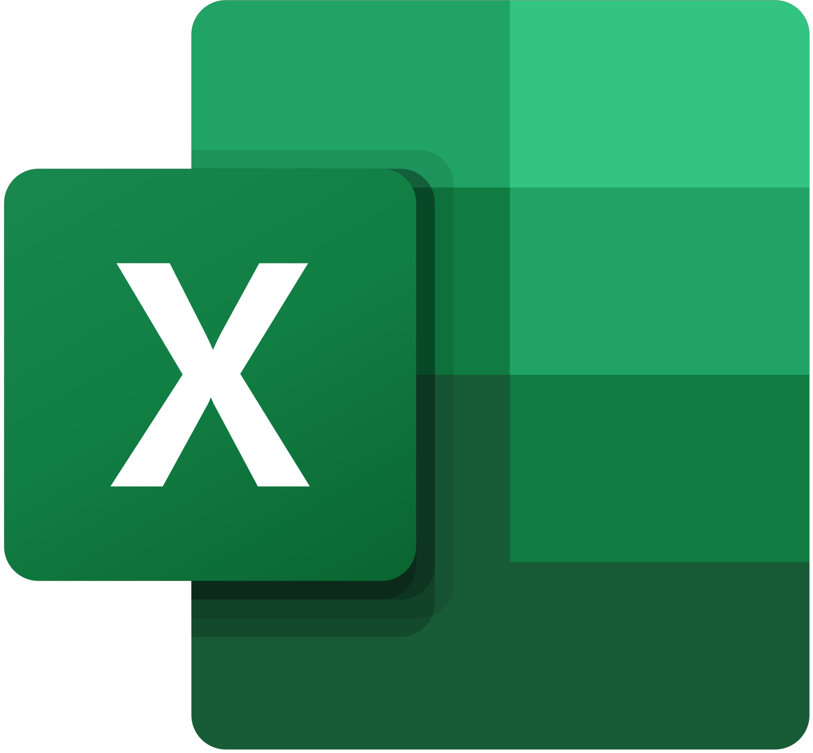

A travers tous ces projets, il est clair qu'il y a une
certaine montée en
compétences techniques. Dans les pages de ces projets, je précise par ailleurs ces compétences techniques.
Mais
de manière générale, ces travaux sont réalisés en groupe, cela implique donc des compétences transversales.
C'est notamment une bonne communication au sein de l'équipe,
à travers des outils de communication
classiques (Discord, Slack ...). Aussi pour définir les tâches du projet, un recueil de besoins est souvent
réalisé. Celui-ci a pour ambition de définir les tâches à faire, et en fonction de l'ambition et du nombre
de
tâches, j'utilise parfois un Trello ou un rétro-planning pour planifier les tâches selon le temps et les
personnes impliquées dans le projet.
Enfin, pour le travail en équipe, je suis souvent en charge du management, à la fois avec les outils que je
viens de citer, mais aussi avec des techniques plus précises. Par exemple, cela peut-être la méthode SCRUM,
mais aussi la mise en place de Git pour le partage de code.

Application Mobile - DroidSoft App
Une app mobile réalisée en Kotlin sous Android Studio pour le média DroidSoft


Développement Logiciel - ASCII Art
Un petit logiciel qui permet de convertir des images au format PGM en fichier texte, reproduisant l'image selon la table ASCII.


Développement Logiciel - Comparaison d'algos
Programme regroupant plusieurs algorithmes de tris, avec export de ces données


Développement Web - Blog sans CMS
Un blog qui reprend les bases des CMS classiques, mais codé à la main, avec création d'articles, lecture de ceux-ci, like, commentaires ...


Développement Web - Twitch Tracker
Un tracker de données obtenues via des APIs, pour appréhender les bases du Web / base de données